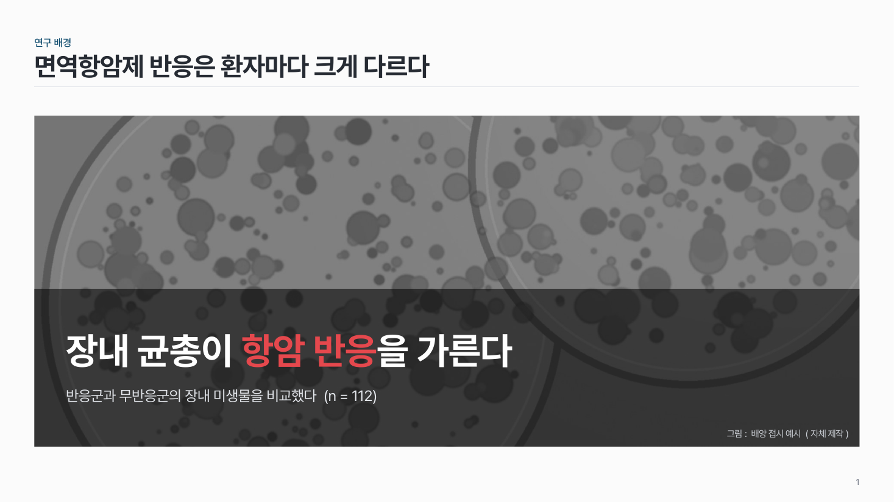
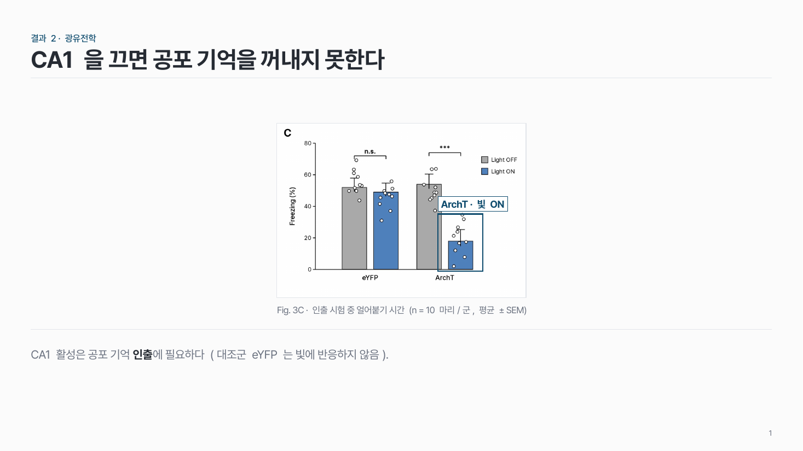
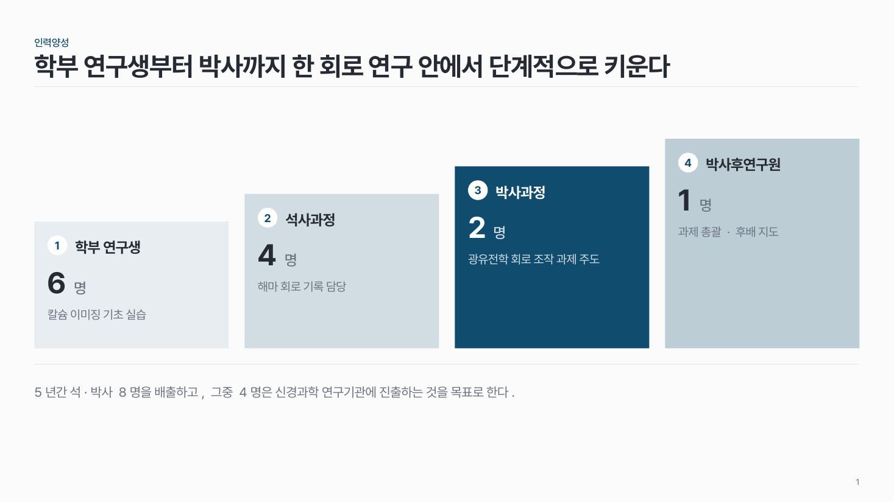

홈 › 그림·사람
그림·사람
그림이나 사람을 보여 주고 싶어요
이럴 때
분석 결과 그림, 현미경 사진, 화면 캡처처럼 그림이 근거일 때, 또는 연구진을 소개할 때예요.
들어가는 것
- 그림 한 장(크게)과 짧은 캡션.
- 그림 안에서 봐야 할 곳이 있으면 A·B·C 표시와 그 설명.
- 비슷한 그림 여러 장이면 대표 하나 + 작은 그림 3–4장.
- 연구진이면 사진, 이름, 소속, 역할, 약력 3줄.
강조할 것
봐야 할 곳 하나를 표시해요. 그림 전체를 보여 주고 "보시다시피…"라고 하지 말고, 어디를 보라는지 슬라이드에서 직접 짚어요.
고르는 법
팁
- 논문 그림은 통째로 붙이지 말고 필요한 패널만 크게 잘라 와요.
- 사진은 비율을 깨지 않고 잘라요. 여러 장이면 크기와 여백을 맞춰요.
- 메인 그림은 하나만 크게, 나머지는 작게 한 줄로.
- 사진 위에 글을 올릴 때는 사진을 흑백으로 바꾸고 밝기를 낮춰요.
- 그림 속 글씨도 슬라이드 글씨만큼 읽혀야 해요. 축 글자 14pt 이상을 목표로 그림을 다시 저장해요.
추천 패턴

메인 그림 img-01
그림 한 장을 크게, 아래에 캡션. 그림 안 지점을 A·B·C 원으로 짚거나, 아래에 작은 그림을 한 줄로 놓아요.

연구진 카드 people-01
책임자는 왼쪽에 크게(사진 위, 글 아래), 참여연구원은 오른쪽에 같은 크기로 쌓아요.

사진 위 문장 img-02
사진 한 장을 꽉 채우고 어두운 면 위에 메시지 한 문장. 사진은 흑백으로 낮춰요.

Figure + 결론 res-04
논문 figure 한 장을 크게, 볼 곳 하나를 표시하고, 결론은 아래 결론 줄에.

인력양성 단계 people-03
학부 → 석사 → 박사 → 박사후로 올라가는 계단. 단계마다 인원과 역할 한 줄.